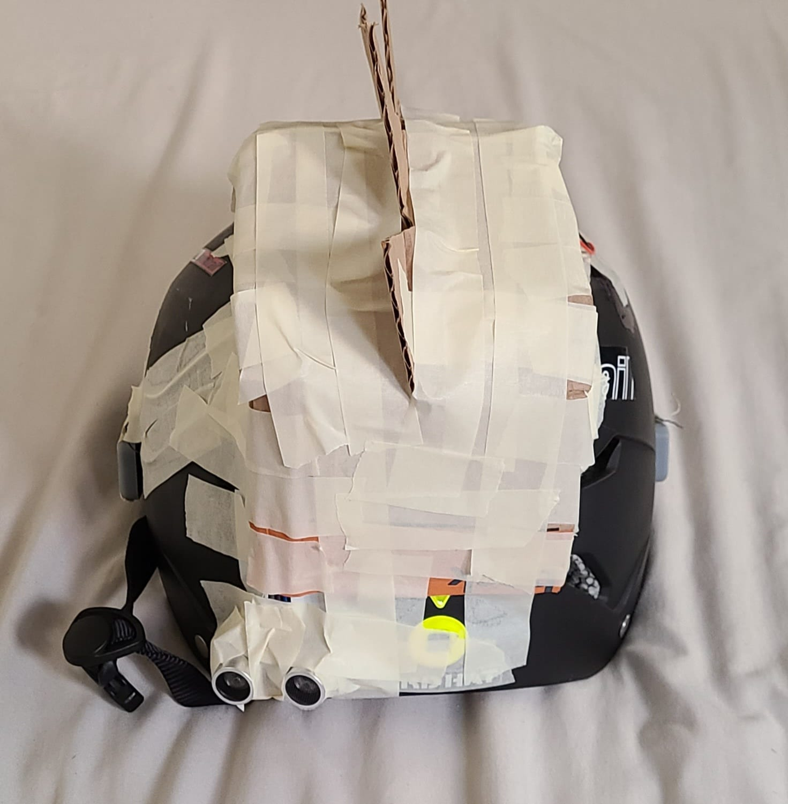
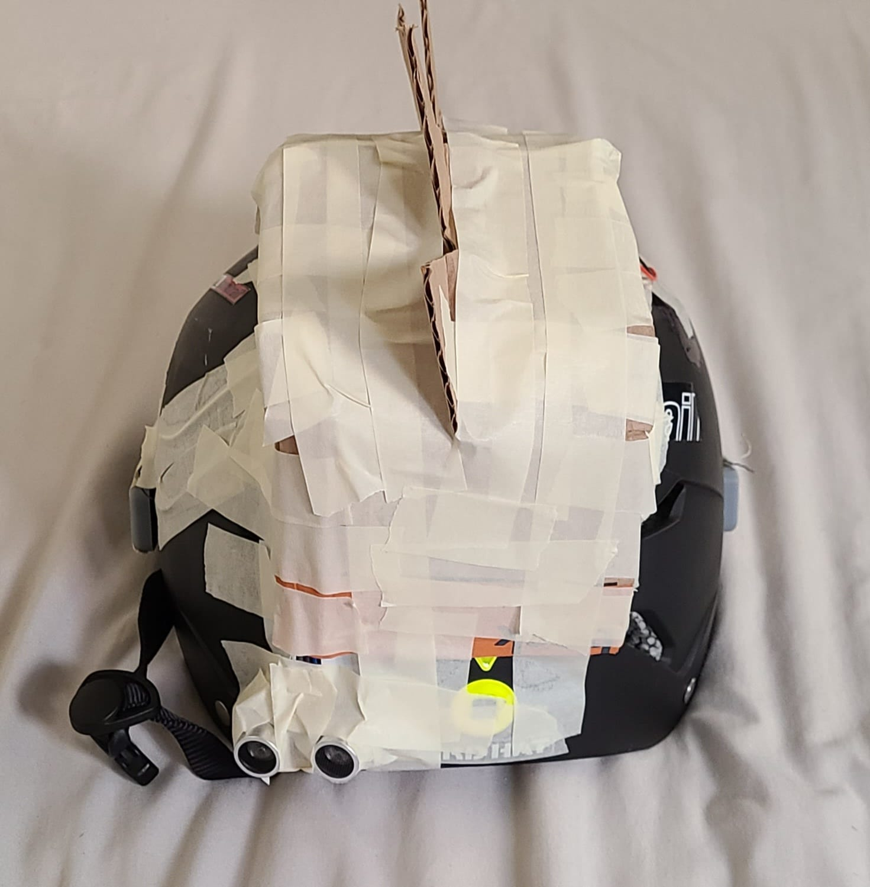

Circuit
Here are some photos of the breadboard and circuit mounted on the helmet along with the sensor and the battery
Here is a picture of the serial monitor where you can see when the sensor detects something between 50-100cm and something within 50 cm

Here are a few pictures of when I started packaging the product to hide all the electronics and refine the looks

 

Firmware
Here is the arduino code to read ultrasound sensor data, convert it to
distance and use that in logic to determine haptics:
/*
HCDE 439: Physical Computing (Winter '22)
Student: Atharv W
Final Assignment: Bicycle Safety Blindspot Monitor!
The distance data gathered from the ultrasound sensor
is used to detect on oncoming car (from behind) and as
it is further away, the vibration motor buzzes with lower
intesnity and longer delay and as the object/vehicle/car
gets closer (within a specified range) the motor vibrates
with a slightly higher intensity and lower delay between buzzes.
Credits: https://create.arduino.cc/projecthub/abdularbi17/ultrasonic-sensor-hc-sr04-with-arduino-tutorial-327ff6
*/
#define echoPin 2 // attach pin D2 Arduino to pin Echo of HC-SR04
#define trigPin 3 //attach pin D3 Arduino to pin Trig of HC-SR04
#define motorpin 9 // attach pin ~D9 to pin + of vibration motor
// defines variables
long duration; // variable for the duration of sound wave travel
int distance; // variable for the distance measurement
void setup() {
pinMode(trigPin, OUTPUT); // Sets the trigPin as an OUTPUT
pinMode(echoPin, INPUT); // Sets the echoPin as an INPUT
pinMode(motorpin, OUTPUT); // Sets the motor as an OUTPUT
Serial.begin(9600); // // Serial Communication is starting with 9600 of baudrate speed
Serial.println("Ultrasonic Sensor HC-SR04 Test"); // print some text in Serial Monitor
Serial.println("with Arduino UNO R3");
}
void loop() {
// Clears the trigPin condition
digitalWrite(trigPin, LOW);
delayMicroseconds(2);
// Sets the trigPin HIGH (ACTIVE) for 10 microseconds
digitalWrite(trigPin, HIGH);
delayMicroseconds(10);
digitalWrite(trigPin, LOW);
// Reads the echoPin, returns the sound wave travel time in microseconds
duration = pulseIn(echoPin, HIGH);
// Calculating the distance
distance = duration * 0.034 / 2; // Speed of sound wave divided by 2 (go and back)
// Displays the distance on the Serial Monitor
Serial.print("Distance: ");
Serial.print(distance);
Serial.println(" cm");
// I chose arbitrary distances of 50 and 100 cm for ease of testing
if(distance > 0 && distance <= 50){
// using for loop to buzz the motor on and off
for (int k = 0; k <= 2; k++){
// i chose values of intensity such as 160 after sevreal iterations
// of personal haptic feeling testing
analogWrite(motorpin, 160);
// the delay values were also chosen after several rounds trial and error
// testing to get a good feel of the haptics
delay(200);
analogWrite(motorpin, 0);
delay(200);
}
} else if (distance > 50 && distance < 100){
// using for loop to buzz the motor on and off
for (int k = 0; k <= 2; k++){
// i chose values of intensity such as 120 after sevreal iterations
// of personal haptic feeling testing
analogWrite(motorpin, 120);
// the delay values were also chosen after several rounds trial and error
// testing to get a good feel of the haptics
delay(350);
analogWrite(motorpin, 0);
delay(350);
}
}
}